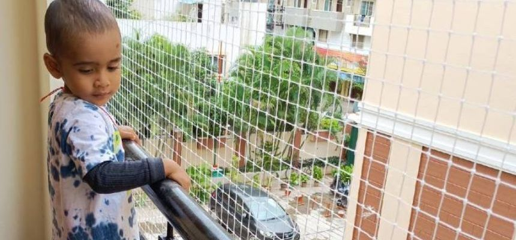

Kids' safety nets shield your child from falling out of windows, balconies, terraces, or staircases. They are designed to prevent falls for toddlers and even adults.
These nets are tear-resistant and have no sharp edges, ensuring your child's safety. Made of high-quality, durable nylon and secured with a robust anchoring system, they offer excellent radial resistance.
Suitable for both indoor and outdoor use, these nets can be installed wherever you gather with friends and family. If you're seeking top-quality child safety nets for stairs, consider our company.
We are a well-known provider of safety nets. Our dedicated professional team has extensive real-world experience, ensuring you receive the best solutions tailored to your needs.